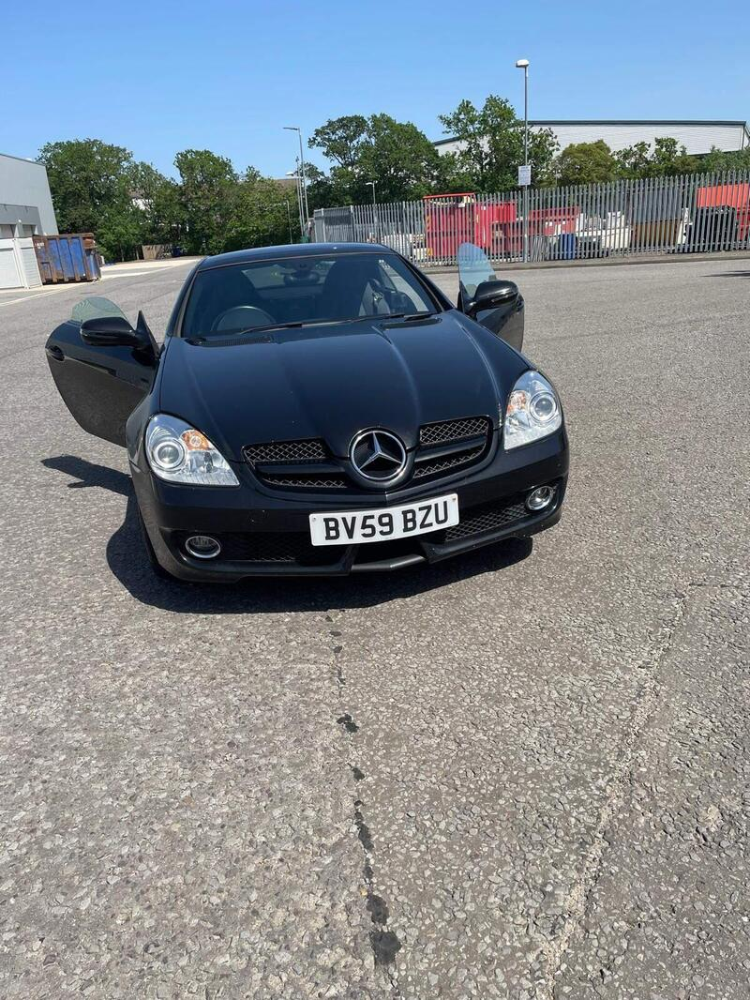
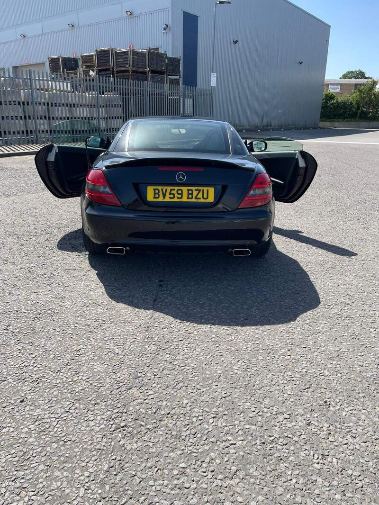
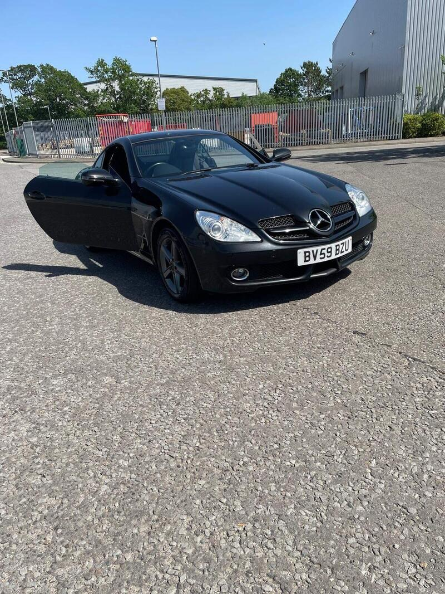
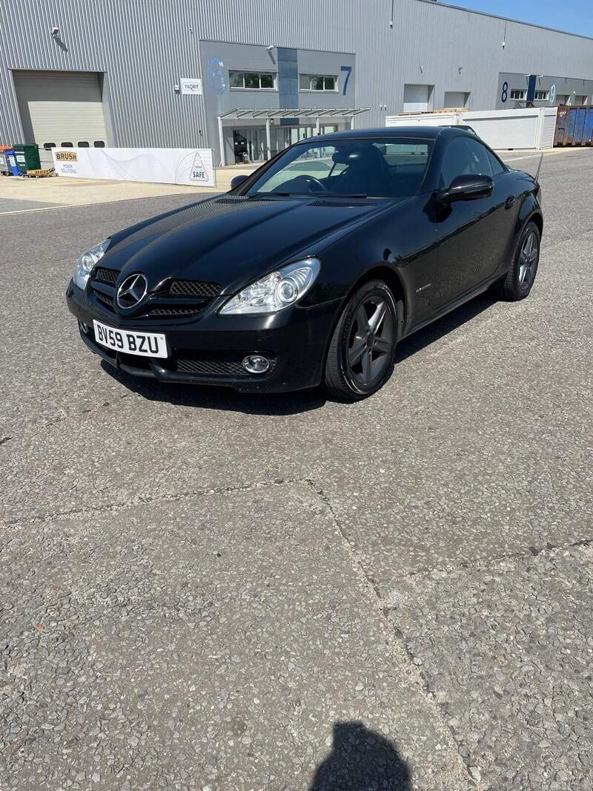

← All 50Ranked #30 of 50




Seller photos from the AutoTrader ad.
✓ Checked 15 Oct
2009 · Mercedes SLK
Mercedes SLK 1.8 SLK200K Tiptronic
The closest car in the new batch, with a fresh MOT.
£2,99974,019 miles · Camberley · 10 mi from GU7
View on AutoTrader ↗Key facts
| Price | £2,999 |
|---|---|
| Year | 2009 |
| Miles | 74,019 |
| Model | Mercedes SLK 1.8 SLK200K Tiptronic |
| Colour | Black |
| Registration | 2009 (59 reg) |
| Owners | 9 owners |
| Service history | Not stated |
| MOT (AutoTrader ad) | 16 Apr 2027 (ad) |
| MOT (seller's text) | 12 months (ad) |
| Seller | Private |
| Location | Camberley |
| From GU7 | 10 mi (AutoTrader) |
| Checked | 15 October 2026 |
Why buy it
- 74k miles, just fully serviced (ad)
- Only 10 mi from GU7
Things to check
Short description: ask for history
Rear subframe, roof microswitches
- Mercedes SLK R170/R171 weak spots
R171 (2004-11) galvanised and largely rust-free, but rear subframes corrode (MOT fails). R170 rusts badly – wings, arches, sills, screen pillars. Vario roof: hydraulic ram leaks, microswitches, should cycle in ~25-30s; M272 V6 balance-shaft gear on early cars; cracked exhaust Y-pipe; auto box wants oil changes.
Seller says (extract)
“Well looked after vehicle which just been fully serviced and comes with 1 year mot, very low mileage and and well maintained…”